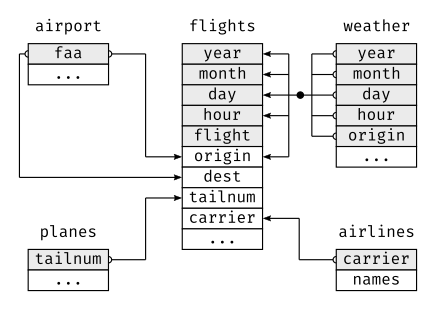

nycflights13 data
Mauricio Vargas and Jonathan Keane
2021-07-13
Source:vignettes/nycflights.Rmd
nycflights.Rmd{dittodb} uses the {nycflights13} dataset for testing and example purposes.
Exploring {nycflights13}
The {nycflights13} dataset contains airline on-time data for all flights departing NYC in 2013. It also includes useful metadata on airlines, airports, weather, and planes.
Have a look to the database schema:

{nycflights13} relational diagram.
{nycflights13} test database
{dittodb} comes with a small subset of {nycflights13} to be used in testing and examples. To access it, use the convenience function nycflights_sqlite() which will return an RSQLite connection the the nycflights.sqlite file included with {dittodb}. Alternatively, you can connect to this file with system.file("nycflights.sqlite", package = "dittodb").
Adding {nycflights13} data to a database
{dittodb} has a few functions that make loading {nycflights13} data into a database easier. nycflights13_create_sql(con, schema = "nycflights") will write the {nycflights13} data to the database connect to with con and write it to the schema nycflights.
To quickly set up an SQLite version nycflights13_create_sql() will create an in-memory SQLite database with the {nycflights13} data.